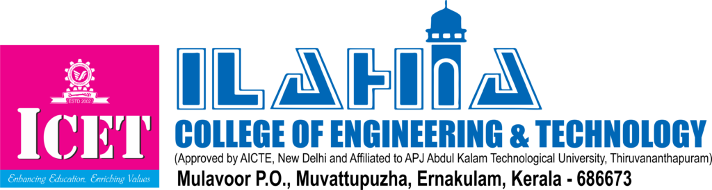

The Master of Computer Applications (MCA) program at Ilahia College of Engineering
and Technology (ICET)is a postgraduate degree designed to prepare students for
core technical roles in the IT sector. Run by the Department of Computer Applications,
which was established in 2008, the program maintains a sanctioned annual intake of 60
students.
